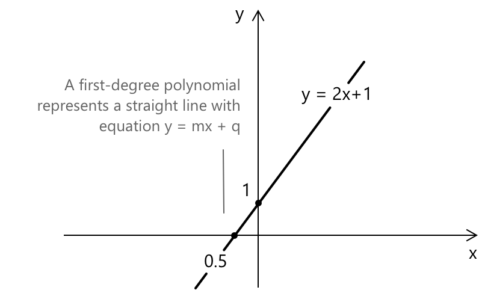
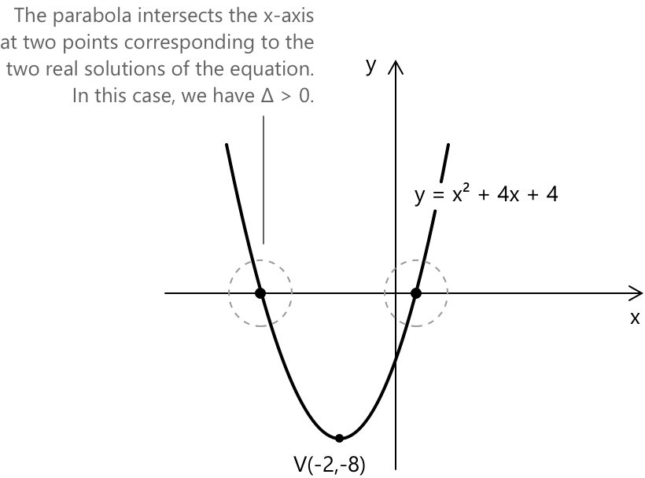
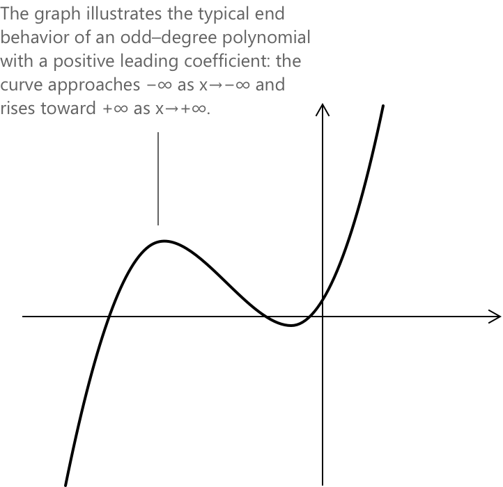

Поліноми
Означення
Нехай \(\mathbb{R}\) позначає поле дійсних чисел. Поліном від однієї змінної \(x\) з коефіцієнтами в \(\mathbb{R}\) визначається як вираз наступного вигляду:
\[a_{n}x^{n}+a_{n-1}x^{n-1}+\dotsb +a_{1}x+a_{0}\]
\(n\) є невивідним цілим числом, а \(a_0, a_1, \ldots, a_n \in \mathbb{R}\) називаються коефіцієнтами, при цьому \(a_n \neq 0\). Кожен доданок \(a_k x^k\) відомий як одночлен степеня \(k\). Поліноми зазвичай позначаються як \(P(x)\) або \(p(x)\). Множина всіх поліномів від \(x\) з дійсними коефіцієнтами позначається \(\mathbb{R}[x]\). Ця множина утворює кільце за двома стандартними операціями. Для двох поліномів:
\[P(x) = \sum_{k=0}^{n} a_k x^k\] \[Q(x) = \sum_{k=0}^{m} b_k x^k\]
їхня сума визначається додаванням коефіцієнтів відповідних степенів:
\[(P + Q)(x) = \sum_{k=0}^{\max(n,m)} (a_k + b_k) \, x^k\]
Добуток двох поліномів визначається за допомогою згортки Коші їхніх послідовностей коефіцієнтів:
\[(P \cdot Q)(x) = \sum_{k=0}^{n+m} \left( \sum_{j=0}^{k} a_j b_{k-j} \right) x^k\]
Коефіцієнти з індексами, що перевищують степінь відповідного полінома, визначені як нулі. За цих двох операцій \(\mathbb{R}[x]\) утворює комутативне кільце з одиницею і є цілісним доменом, оскільки добуток двох ненульових поліномів ніколи не є нульовим поліномом.
Множина \(\mathbb{R}[x]\) становить кільце за стандартними операціями додавання та множення, оскільки сума, різниця або добуток будь-яких двох поліномів у \(\mathbb{R}[x]\) дає інший поліном у тій самій множині.
Степінь полінома
Степінь полінома \(P(x)\) визначається як найбільше ціле число \(k\), таке що коефіцієнт \(a_k\) є ненульовим. Цей степінь позначається як \(\deg P\) або \(\deg P(x)\). Наприклад, розглянемо поліном:
\[P(x) = 2x^3 – 5x^2 + 3x – 7\]
\(P(x)\) має степінь 3, оскільки найбільший показник степеня, що з'являється з ненульовим коефіцієнтом, дорівнює 3. Поліном може мати степінь 3, навіть якщо деякі проміжні доданки відсутні: поліном \(P(x) = 4x^3 + x – 2\) також має степінь 3, незважаючи на відсутність квадратичного члена.
Степінь визначений однозначно завдяки вимозі, що \(a_n \neq 0\) в означенні. Провідний коефіцієнт однозначно визначає доданок найвищого степеня, відомий як провідний член.
Нульовий поліном, де всі коефіцієнти дорівнюють нулю, є єдиним поліномом, якому не присвоюється степінь у звичайному розумінні. За домовленістю, \(\deg 0 = -\infty\), вибір якого обґрунтований вимогою, щоб наступна тотожність залишалася правильною, навіть коли один із двох множників є нульовим поліномом:
\[\deg(P \cdot Q) = \deg P + \deg Q\]
Інтерполяція та степінь полінома
Важливим наслідком концепції степеня полінома є його роль в інтерполяції. Дано \(n+1\) різних точок \(\alpha_0, \alpha_1, \dots, \alpha_n \in \mathbb{R}\) та відповідні значення \(\beta_0, \beta_1, \dots, \beta_n \in \mathbb{R}\), існує єдиний поліном \(p(x) \in \mathbb{R}[x]\) степеня не більше \(n\), який задовольняє наступні умови:
\[p(\alpha_i) = \beta_i \quad \forall , i = 0, 1, \dots, n\]
Цей результат демонструє прямий зв'язок між степенем полінома та кількістю точок даних, необхідних для його однозначного визначення. Зокрема, поліном степеня не більше \(n\) однозначно визначається \(n+1\) різними вузлами інтерполяції. Процес побудови такого полінома відомий як поліноміальна інтерполяція. Для цієї мети доступно кілька явних методів, причому формула інтерполяції Лагранжа є найбільш класичним підходом.
Степінь полінома та його геометрична інтерпретація
Степінь полінома безпосередньо впливає на форму його графіка в декартовій площині, визначаючи загальну поведінку та геометрію кривої. Поліном першого степеня, який також називають лінійним поліномом, створює графік, що є прямою лінією вигляду:
\[y = mx + q\]
У цьому рівнянні \(m\) представляє кутовий коефіцієнт (нахил), а \(q\) позначає перетин з віссю y. Наприклад, рівняння \(y = 2x + 1\) визначає конкретну пряму лінію. Графік показує рівняння прямої \( y = 2x + 1 \).

У рівнянні прямої кутовий коефіцієнт \( m \) відповідає похідній, коли пряма є дотичною до графіка функції в заданій точці. Загалом, похідна функції в точці дає кутовий коефіцієнт дотичної в цій точці.
Поліноми другого степеня, також відомі як квадратні поліноми, мають графік, що відповідає параболі вигляду:
\[y = ax^2 + bx + c \]
\(a\) визначає випуклість параболи, \(b\) та \(c\) спільно визначають положення вершини, а \(c\) представляє перетин з віссю y. На графіку показано рівняння параболи \( y = x^2 + 4x – 4.\) У цьому випадку парабола відкривається вгору, оскільки коефіцієнт при \( x^2 \) є додатним.

Поліноми третього степеня, також відомі як кубічні поліноми, мають графік, що відповідає кубічній кривій вигляду:
\[y = ax^3 + bx^2 + cx + d \]
де \( a \) визначає загальну форму та орієнтацію кривої, \( b \) та \( c \) впливають на кривизну та точки перегину, а \( d \) представляє перетин з віссю y.
Кінцева поведінка полінома
Кінцева поведінка полінома визначається виключно його старшим членом, тобто членом найвищого степеня \(a_n x^n\). Коли \(|x|\) наближається до нескінченності, всі члени нижчого степеня стають асимптотично нехтовними порівняно зі зростанням, що забезпечується степенем \(x^n\).
Відповідно, опис поведінки полінома для \(x \to -\infty\) та \(x \to +\infty\) зводиться до аналізу взаємозв'язку між парністю степеня \(n\) та знаком старшого коефіцієнта \(a_n\).
-
Коли степінь є парним, функція \(x^n\) є невід'ємною для всіх дійсних значень \(x\), і кінцева поведінка, отже, є симетричною: поліном розбігається до \(+\infty\), якщо \(a_n > 0\), і до \(-\infty\), якщо \(a_n < 0\).
-
Коли степінь є непарним, степінь \(x^n\) змінює знак разом із \(x\), що дає несиметричну конфігурацію, за якої два кінці графіка спрямовані в протилежні сторони.
| Степінь \(n\) | \(a_n\) | \(x \to -\infty\) | \(x \to +\infty\) | Напрямок | Кінцева орієнтація |
|---|---|---|---|---|---|
| парний | \(>0\) | \(+\infty\) | \(+\infty\) | той самий | \( \nwarrow \) \( \nearrow \) |
| парний | \(<0\) | \(-\infty\) | \(-\infty\) | той самий | \( \swarrow \) \( \searrow \) |
| непарний | \(>0\) | \(-\infty\) | \(+\infty\) | протилежний | \( \swarrow \) \( \nearrow \) |
| непарний | \(<0\) | \(+\infty\) | \(-\infty\) | протилежний | \( \nwarrow \) \( \searrow \) |
У всіх випадках старший член повністю визначає асимптотичну поведінку полінома, тоді як внесок решти членів поступово зменшується зі зростанням \(|x|\).
Щоб більше роз'яснити цю концепцію, розглянемо випадок у третьому рядку з наступним поліномом: \[ x^3 + 5x^2 + 5x + 1 \]
У цьому випадку поліном демонструє характерну кінцеву поведінку кубічної функції з додатним старшим коефіцієнтом. Коли \(x\) рухається до \(-\infty\), член найвищого степеня домінує і змушує графік необмежено спадати, через що крива йде вниз з лівого боку. Навпаки, коли \(x\) наближається до \(+\infty\), старший член стає дедалі більш додатним і тягне весь вираз вгору, через що графік необмежено зростає з правого боку.

| Ступінь \(n\) | \(a_n\) | \(x \to -\infty\) | \(x \to +\infty\) | Напрямок | Кінцева орієнтація |
|---|---|---|---|---|---|
| непарний | \(>0\) | \(-\infty\) | \(+\infty\) | протилежний | \( \swarrow \) \( \nearrow \) |
Така поведінка створює знайому орієнтацію «знизу-вгору», характерну для всіх поліномів непарного ступеня з додатним провідним коефіцієнтом. Розуміння кінцевої поведінки полінома безпосередньо з його алгебраїчної структури є особливо цінним при вивченні загальної поведінки функцій. Зосередившись на провідному члені \(a_n x^n\), можна передбачити, як змінюється графік при \(x \to +\infty\) або \(x \to -\infty\), оскільки швидкий ріст \(x^n\) домінує та робить усі доданки нижчого ступеня нехтовними. У багатьох випадках визначення ступеня полінома та знака його провідного коефіцієнта вже дає чітку, негайну вказівку на глобальну форму функції.
Одночлени, двочлени, тричлени
Одночлен — це поліномний вираз, що складається лише з одного члена: сталі, однієї змінної або комбінації сталих і змінних, піднесених до цілих невід'ємних степенів. Наприклад, \(3x^2\) та \(-5y\) є одночленами.
Двочлен — це поліномний вираз, що складається з двох членів: сталих, змінних або добутків сталих і змінних, піднесених до цілих невід'ємних степенів. Наприклад, \(3x + 7\) та \(-2y^2 + 5y\) є двочленами.
Тричлен — це поліномний вираз, що складається з трьох членів, які також можуть бути сталими, змінними або добутками сталих і змінних, піднесених до цілих невід'ємних степенів. Наприклад, \(x^2-2x + 4\) та \(3y^3 + 2y^2- y\) є тричленами.
Сума або різниця двох поліномів
Сума або різниця двох поліномів однакового ступеня призводить до полінома того ж ступеня, або нижчого ступеня, якщо члени найвищого ступеня взаємознищуються. Наприклад, якщо ми маємо два поліноми ступеня \(n\), скажімо \(P(x)\) та \(Q(x)\), то їхня сума або різниця, що позначається як \(P(x) ± Q(x)\), також є поліномом ступеня \(\leq n\).
Сума або різниця двох поліномів отримується шляхом додавання або віднімання відповідних коефіцієнтів подібних членів.
\[ \begin{align*} P(x) + Q(x) &= (ax^n + bx^{n-1} + \ldots + z) + (px^n + qx^{n-1} + \ldots + w) \\[0.6em] &= (a+p)x^n + (b+q)x^{n-1} + \ldots + (z+w) \\[0.6em] P(x)-Q(x) &= (ax^n + bx^{n-1} + \ldots + z) – (px^n + qx^{n-1} + \ldots + w) \\[0.6em] &= (a-p)x^n + (b-q)x^{n-1} + \ldots + (z-w) \end{align*} \]
Приклад 1
Дано два поліноми \(P(x)\) та \(Q(x)\), обчислити суму \(P(x)\) + \(Q(x)\):
\[ P(x) = x^2 + 3x-1 \] \[ Q(x) = 2x^2-x + 5 \]
Їхня сума визначається як:
\[ P(x) + Q(x) = \left( x^2 + 3x-1 \right) + (2x^2-x + 5) \]
Розкриваючи дужки та збираючи члени однакового ступеня, отримаємо:
\[ \begin{align} P(x) + Q(x) &= x^2 + 3x – 1 + 2x^2 – x + 5 \\[0.5em] &= (x^2 + 2x^2) + (3x – x) + (-1 + 5) \\[0.5em] &= 3x^2 + 2x + 4 \end{align} \]
Результат додавання двох поліномів \(P(x) + Q(x)\) виражається як:
\[3x^2 + 2x + 4 \]
Приклад 2
Розглянемо два поліноми \(P(x)\) та \(Q(x)\) ступеня \(n\). Як було встановлено вище, їхня сума або різниця є поліномом ступеня щонайбільше \(n\). Наступний приклад ілюструє випадок, коли ступінь строго зменшується.
\[ P(x) = 2x^2+3x-1 \] \[ Q(x) = 2x^2-x+5 \]
Різниця \(P(x)-Q(x)\) дорівнює:
\[ P(x)-Q(x) = \left( 2x^2+3x-1 \right)-\left( 2x^2-x+5 \right) \]
Розкриваючи дужки та збираючи члени однакового ступеня:
\[ \begin{align*} P(x)-Q(x) &= 2x^2+3x-1-2x^2+x-5 \\[0.5em] &= (2x^2-2x^2)+(3x+x)+(-1-5) \\[0.5em] &= 4x-6 \end{align*} \]
Провідні члени ступеня \(n=2\) повністю взаємознищуються, в результаті чого отримуємо поліном ступеня \(n-1=1\). Це підтверджує, що ступінь суми або різниці може бути строго меншим за ступінь доданків.
Як поділити два поліноми
Ділення двох поліномів — це більш складний процес порівняно з їх додаванням або відніманням. Дано два поліноми \( P(x) \) та \( D(x) \), завжди можливо визначити два поліноми \( Q(x) \) та \( R(x) \), такі що:
\[P(x) = Q(x) D(x) + R(x) \]
- \( Q(x) \) — це частка від ділення.
- \( R(x) \) — це остача.
- Степ \( R(x) \) строго менший за степінь \( D(x) \)
Цей результат відомий як алгоритм ділення поліномів, або ділення поліномів «у стовпчик». Він забезпечує систематичну процедуру ділення будь-якого полінома на ненульовий поліном нижчого або рівного степеня, гарантуючи, що остача дорівнює нулю або має строго менший степінь, ніж дільник.
Коли ділення двох поліномів виражається як скорочений часткий вираз (без явного показу остачі), ми отримуємо раціональну функцію, визначену як:
\[ R(x) = \frac{P(x)}{Q(x)} \]
де \( P(x) \) та \( Q(x) \) — поліноми і \( Q(x) \ne 0 \).
У цьому контексті варто розглянути раціональні рівняння та раціональні нерівності, які містять вирази, де і чисельник, і знаменник є поліномами.
Розкладання поліномів на множники
Число \( \alpha \) називається коренем полінома \( P(x) \), якщо \( P(\alpha) = 0 \). Корінь \( \alpha \) називається цілим, раціональним, дійсним або комплексним залежно від того, чи є \( \alpha \) цілим числом, раціональним числом, дійсним числом або комплексним числом.
Існування коренів над \( \mathbb{C} \) гарантується Основною теоремою алгебри, яка стверджує, що кожен несталий поліном з комплексними коефіцієнтами має принаймні один комплексний корінь. Як наслідок, будь-який поліном степеня \( n \) над \( \mathbb{C} \) розкладається рівно на \( n \) лінійних множників, враховуючи кратність. Над \( \mathbb{R} \) ситуація більш нюансована: дійсні корені можуть існувати не завжди, і в розкладанні можуть з'явитися незвідні квадратні множники без дійсних коренів.
За припущенням, що всі корені відомі, будь-який поліном \( P(x) \) з \( P(0) \ne 0 \) допускає розкладене представлення через свої корені:
\[ P(x) = P(0) \prod_{\rho} \left(1 – \frac{x}{\rho} \right) \]
де добуток здійснюється по всіх коренях \( \rho \) полінома, дійсних або комплексних, враховуючи кратність. Це представлення виражає поліном повністю через значення, при яких він перетворюється на нуль, і робить роль кожного кореня явною в структурі виразу.
Маніпуляції з поліномами разом із глибоким розумінням їхніх структурних властивостей лежать в основі широкого спектра методів алгебри та аналізу. Наступні теми розширюють матеріал, розглянутий на цій сторінці, і рекомендуються як природне продовження.
Поліноміальні рівняння
Поліноміальне рівняння — це рівняння вигляду:
\[a_{n}x^{n}+a_{n-1}x^{n-1}+\dotsb +a_{2}x^{2}+a_{1}x+a_{0} = 0\]
Поліноміальні рівняння класифікують за степенем старшого члена. Залежно від їхнього степеня, їх називають лінійними (степінь 1), квадратними (степінь 2), кубічними (степінь 3) або рівняннями вищого степеня, коли \(n > 3\).
Поліноміальні функції
Поліноміальна функція — це функція вигляду:
\[y = a_{n}x^{n}+a_{n-1}x^{n-1}+\dotsb +a_{2}x^{2}+a_{1}x+a_{0} \]
Нехай \( p(x) \) та \( q(x) \) будуть двома поліномами. Якщо дві поліноміальні функції рівні для кожного значення \( x \), тобто:
\[ p(x) = q(x) \quad \text{для всіх } x \]
тоді ці два поліноми є ідентичними, що означає, що вони мають однакові коефіцієнти. Це відомо як принцип тотожності поліномів.
Поліноміальні функції мають кілька помітних аналітичних властивостей.
- Їхня область визначення — вся дійсна пряма \(\mathbb{R}\), і вони є неперервними та гладкими в кожній точці, без точок розриву, сингулярностей, заломів або кутів.
- Як наслідок їхньої глобальної регулярності, поліноміальні функції не мають асимптот будь-якого виду.
- Щодо симетрії, непарна поліноміальна функція має точку перегину в початку координат \((0,0)\), тоді як парна поліноміальна функція досягає локального максимуму або мінімуму при \(x = 0\).